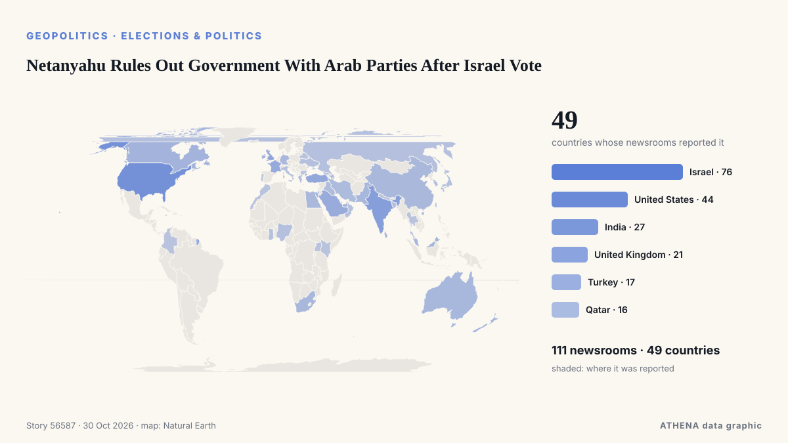

ATHENA News Room — Παγκόσμια ειδησεογραφική ανάλυση — κάθε αριθμός εξηγημένος
Οι ειδήσεις του κόσμου, διασταυρωμένες ανάμεσα σε χώρες
Το ATHENA News Room παρακολουθεί εκατοντάδες ειδησεογραφικά μέσα σε όλο τον κόσμο και ομαδοποιεί τις αναφορές τους σε γεγονότα. Για κάθε γεγονός βλέπετε πόσα μέσα σε πόσες χώρες το ανέφεραν, ποιος ήταν πρώτος και έναν βαθμό κινδύνου με τους λόγους του — με ενημέρωση κάθε 15 λεπτά, σε επτά γλώσσες.
Ζωντανά από τις ειδήσειςNetanyahu Rules Out Government With Arab Parties After Israel Vote111 μέσα · 49 χώρες · Κίνδυνος 4.8 · Πηγές: Arab News, Haaretz (English)

ΓεωπολιτικήNetanyahu Rules Out Government With Arab Parties After Israel Vote
LONDON: It is a measure of how much is at stake in Tuesday’s legislative election in Israel, and how finely balanced the outcome might be, that a record 22,000 police officers have been deployed in… από Arab News
Οι τίτλοι των ειδήσεων παρουσιάζονται στα αγγλικά, όπως δημοσιεύτηκαν.
Melania Trump Brokers Russia-Ukraine Ceasefire in Oleshky
Residents of the Russian-occupied Ukrainian town have reported a worsening food crisis since 2022. από Express Tribune
US To Grant Flavio Bolsonaro Visas After Brazil Election Loss
Brother Eduardo welcomes him in Miami, Brazilian media reports, as US confirms visas for Bolsonaro and his family. από Anadolu Agency (English)
Η σημερινή εικόνα
| 20:00 | 281 |
|---|---|
| 21:00 | 370 |
| 22:00 | 293 |
| 23:00 | 301 |
| 00:00 | 334 |
| 01:00 | 300 |
| 02:00 | 376 |
| 03:00 | 307 |
| 04:00 | 386 |
| 05:00 | 416 |
| 06:00 | 258 |
| 07:00 | 806 |
| 08:00 | 933 |
| 09:00 | 659 |
| 10:00 | 696 |
| 11:00 | 617 |
| 12:00 | 749 |
| 13:00 | 681 |
| 14:00 | 606 |
| 15:00 | 541 |
| 16:00 | 554 |
| 17:00 | 481 |
| 18:00 | 395 |
| 19:00 | 360 |
Κίνδυνος των σημερινών γεγονότων
ECB President Lagarde to step down on 7 February 2027
The deposit rate will be left at 2.5% on Thursday, analysts say. από Luxembourg Times
Venezuela: Opposition leader Maria Corina Machado says US backs 2027 election
CARACAS, Oct 23 - The Venezuelan opposition movement headed by Nobel Peace Prize laureate Maria Corina Machado is preparing for eventual elections, including a new effort to boost voter registration… από The Straits Times
Bolsonaro’s claim to be Brazil’s leader not backed by Trump
The Trump administration does not plan to back Flavio Bolsonaro’s claim to be Brazil’s rightful leader, despite helping the defeated candidate reach the US after years of supporting him and his… από Cyprus Mail
Με την ευρύτερη κάλυψη
Αναδυόμενα σήματα
- Απότομη αύξηση · Ενεργό τώραBinance
- Απότομη αύξηση · Ενεργό τώραCrypto and digital assets
- Απότομη αύξηση · Ενεργό τώραUSB
- Νέο όνομα στις ειδήσεις · Ενεργό τώραMayon Volcano
- Νέο όνομα στις ειδήσεις · Ενεργό τώραBadrinath
Επίσημες προειδοποιήσεις
- Red notification for tropical cyclone ARNAB-26. Population affected by Category 1 (120 km/h) wind speeds or higher is 3.049 million .Red · GDACS ·
- M 7.0 - Bonin Islands, Japan regionM7.0 · USGS ·
- M 7.0 - Bonin Islands, Japan regionM7.0 · USGS ·
- M 7.2 - 200 km W of Sola, VanuatuM7.2 · USGS ·
- M 6.2 - 43 km ESE of Port-Olry, VanuatuM6.2 · USGS ·
Το News Room στο Telegram
Μπείτε δωρεάν στην ομάδα ATHENA News Room και λάβετε τις ειδήσεις τη στιγμή που δημοσιεύονται εδώ:
- έκτακτα γεγονότα με κίνδυνο 6 ή περισσότερο
- ωριαία σύνοψη των κορυφαίων γεγονότων
- ενημερώσεις των παρακολουθήσεων κινδύνου (Ορμούζ, Ερυθρά Θάλασσα, Ταϊβάν, κυρώσεις κ.ά.)
- την ημερήσια ενημέρωση κάθε πρωί στις 10:00 (ώρα Ελλάδας)
- εβδομαδιαία προοπτική
- επίσημες προειδοποιήσεις, αναδυόμενα σήματα και κινδύνους σε άνοδο
Πατήστε το κουμπί, ανοίγει το Telegram, πατήστε «Join». Οι αναρτήσεις είναι στα αγγλικά· μπορείτε να τη σιγάσετε ή να αποχωρήσετε όποτε θέλετε. Δεν έχετε Telegram; Είναι δωρεάν στο telegram.org.
Παρακολούθηση κινδύνων
Περισσότερα ›Παγκόσμιοι κίνδυνοι — εβδομάδα 44, 2026 (26 Οκτ – 1 Νοε) ›
Γεωπολιτική, Πολιτική & Ασφάλεια
Περισσότερα ›Pope Leo becomes first pontiff to cast ballot in US election
WASHINGTON, Oct 30 - Pope Leo XIV cast a ballot by mail in the US midterm elections, the Vatican press office said on Friday, a historic first for the American-born pontiff. από The Straits Times
- Άμυνα & εθνική ασφάλεια
Pentagon tells Europeans to cool their rhetoric on Russia, sources say
- Εκλογές & πολιτική
Trump brands Brazil election a 'disgrace', questions Lula's victory
- Πόλεμοι & συγκρούσεις
Saudi-led coalition says it intercepted Houthi drone near Riyadh
- Πόλεμοι & συγκρούσεις
North Korea fires 'around a dozen' ballistic missiles into East Sea
Οικονομία, Χρηματοοικονομικά & Αγορές
Περισσότερα ›The sell-off for tech stocks worsens and overwhelms Wall Street
U.S. stocks are climbing Monday after oil prices eased back. από The Korea Times
- Πληθωρισμός & επιτόκια
Fed holds main interest rate steady despite accelerating inflation
- Κρυπτονομίσματα & ψηφιακά στοιχεία
Binance says $6.3bn stolen in biggest crypto heist in history: What we know
- Κρυπτονομίσματα & ψηφιακά στοιχεία
North Korea linked to $6.3B Binance hack
- Μετοχές, ομόλογα & αγορές
Dakar Rally 2027 will be held in Portugal and Morocco, say organisers
Εμπόριο, Βιομηχανία & Υποδομές
Περισσότερα ›Iran says navy destroyed ‘enemy’ unmanned vessel, 2 tankers damaged in Strait of Hormuz
Revolutionary Guard Corps Navy says vessels had switched off navigation systems, tried to travel via unauthorized routes. από Anadolu Agency (English)
- Εμπόριο & εμπορικές συμφωνίες
Uzbekistan–Türkiye Trade Agreement to Cover More Products
- Γεωργία & επισιτιστική ασφάλεια
22 African Heads of State Join AU Chairperson at Russia-Africa Summit in Moscow
- Αερομεταφορές, σιδηρόδρομος & οδικές
Russian citizen faces spying charges in Poland after photographing railways
- Μεταποίηση
Urgent: Explosion hits ammunition factory in southern Spain, injuring at least 2
Ενέργεια, Πόροι & Περιβάλλον
Περισσότερα ›3 Killed as Ukraine Renews Drone Strikes Against Oil Refineries
Deputy Prime Minister Alexander Novak confirmed that Ukrainian drones targeted three oil refineries and one gas chemical complex overnight. από The Moscow Times
- Ακραία καιρικά & φυσικές καταστροφές
Syria flash floods kill at least 5, force hundreds of families from camps
- Κλίμα & κλιματική πολιτική
Britain bars entry to Swedish academic ahead of appearance with Palestine Action founder
- Πετρέλαιο & φυσικό αέριο
Inflation heats up again, days before midterm elections
- Ακραία καιρικά & φυσικές καταστροφές
Bhutan glacial lake outburst triggers flash floods
Τεχνολογία, ΤΝ & Κυβερνοασφάλεια
Περισσότερα ›Intel’s Q3 Results Show Supply Chain Disruptions and PC Plunge
Intel faces a tough challenge as manufacturing bottlenecks and rising memory costs impact PC sales despite strong data center growth. από EE Times
- ΜΜΕ & παραπληροφόρηση
‘They killed us’: Novaya Gazeta announces closure after more than 30 years
- Επεξεργαστές & υπολογιστική
China denies spying on Nvidia’s Jensen Huang
- Κυβερνοασφάλεια
Jack Grealish in 'breach of club discipline' as David Moyes responds to Everton decision
- Λογισμικό & cloud
Finland launches criminal probe into land clearance for Google data centre
Επιχειρήσεις, Εταιρείες & Επενδύσεις
Περισσότερα ›President Chapo invites Russian investors to explore business opportunities in Mozambique – AIM report
Mozambican President Daniel Chapo has invited Russian companies and investors to explore business opportunities in Mozambique, particularly in mechanized agriculture, industry, energy, infrastructure… από Club of Mozambique
- Πτωχεύσεις & αναδιαρθρώσεις
Poundland files for administration putting 12,000 jobs at risk
- Επενδύσεις
EIG and Acwa Announce Plenum Power, a Strategic Partnership to Invest in U.S. Power Infrastructure
- Εταιρική στρατηγική
BP profits hit 18-year high as Iran war drives up oil refining margins
- Εταιρική στρατηγική
Amazon sinks as AI spending eclipses fastest cloud growth in five years
Υγεία, Επιστήμη & Έρευνα
Περισσότερα ›Saudi Arabia suspends travel, entry from Kenya over Ebola concerns
Measures include suspension of all visa types and entry restrictions for travelers who stayed in Kenya or Ebola-affected countries within previous 21 days. από Anadolu Agency (English)
- Επιδημίες & δημόσια υγεία
Africa CDC urges coordinated action as Ebola outbreak exceeds 10,000 cases
- Επιδημίες & δημόσια υγεία
Andy Burnham's Number 10 North to expand with 50 new jobs in Manchester
- Επιστημονικά επιτεύγματα
US inmate Christa Pike says she woke up 'confused and in pain' after failed execution
- Συστήματα υγείας
10:07 Belarus joins humanitarian operation in Oleshky Society
Κοινωνία, Δίκαιο & Δημόσια Πολιτική
Περισσότερα ›Four Italian military personnel killed in helicopter crash in Bosnia and Herzegovina
Four Italian military personnel were killed and 11 others injured when a CH-47 helicopter deployed under the European Union's EUFOR Althea peacekeeping mission crashed in Bosnia and Herzegovina… από AzerNews
- Διαμαρτυρίες & κοινή γνώμη
Thousands of students and workers protest in Italy under heavy security
- Εγκλήματα & διαφθορά
Copper-thieves triggered explosion with 6 dead in Athens; 3 arrests
- Μετανάστευση & πληθυσμός
Seoul fears being sidelined as US reaches out to North Korea
- Ανθρώπινα δικαιώματα
Humanitarian aid being delivered to Oleshky, 25 buses with 750 seats ready for evacuation – Lubinets
Αθλητισμός
Περισσότερα ›Kane beat Mbappé by less than 41 points to win Ballon d’Or — Organisers
Bayern Munich striker Harry Kane has beaten Barcelona youngster Lamine Yamal and Real Madrid forward Kylian Mbappé to emerge as the best player of the 2025-2026 season in Spanish newspaper Marca's… από Vanguard
- Ποδόσφαιρο
Azerbaijan to face Afghanistan in final match at FIFA U-15 World Cup in Baku
- Ποδόσφαιρο
‘We’re not in Disneyland’ – Mikel Arteta explains Max Dowman red card reaction
- Ολυμπιακά & άλλα σπορ
Mbilli 'ready to shock the world' against Canelo
- Ολυμπιακά & άλλα σπορ
BOC President Meets Bulgarian Athletes in Dakar Olympic Village
Πολιτισμός, Πρόσωπα & Τρόπος ζωής
Περισσότερα ›Cartoon for October 30, 2026
Political cartoons from the desk of Matt Wuerker. από Politico
- Απώλειες
Sir Patrick Stewart: Sir Ian McKellen leads tributes to ‘respected and beloved’ actor
- Κινηματογράφος & τηλεόραση
Patrick Stewart, Star Trek and X-Men actor, dies at 86
- Μουσική
Grupo Barak in Costa Rica, 20 November 2026
- Βασιλικοί οίκοι & πρόσωπα
What time is The Celebrity Traitors on? Here's when you can watch the final episode